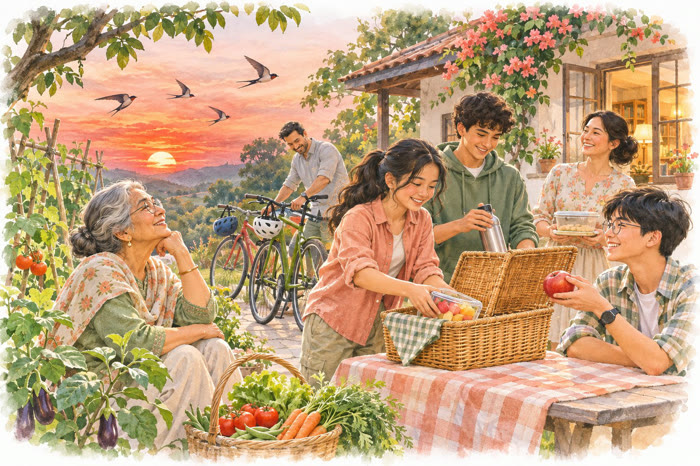

Listen to the text
Speed:

My grandmother has never studied ecology, but she knows the laws of nature better than any textbook. She calls them "the rules of the garden". Each of them begins with "if". "If you water tomatoes at noon, the sun burns their leaves." "If bees have no flowers, they don't make honey." "If you plant the same vegetable in the same place every year, the soil gets tired." "If you kill all the spiders, you get more flies." "If swallows fly low, it rains." These things are always true. They don't depend on the day or on her mood. Our Science teacher would call them facts. In English they are expressed by the zero conditional: if something happens, something else always happens. But Grandma also uses another kind of "if". She uses it when she looks at the sky in the morning and plans the day. "If it rains this afternoon, I will not water the garden." "If the wind doesn't stop, the apples will fall before they are ripe." "If you help me to pick the cherries, I will bake a pie." These sentences are not about laws. They are about one real situation in the future. Maybe it will rain, and maybe it will not. This is the first conditional: if something happens, something else will happen. Last Saturday I heard both kinds in five minutes. Our family was planning a picnic by the river. "If we leave rubbish in the grass, animals eat it and get ill," said Grandma. "So everybody takes a bag." "If we go by bikes, we will not need the car," said Dad. "If you make a fire near dry grass, it spreads in seconds," said Grandma. "So we will cook at home." "If I finish my homework, will you take me?" asked my little brother. "If you finish it before nine, we will even take your kite," said Mum. We went by bikes. We took four bags and brought five back, because we collected somebody else's bottles too. My brother's kite got stuck in a willow. "If you fly a kite near trees, you lose it," said Grandma calmly. "That is a rule." "If we come back tomorrow with a ladder, we will get it down," said Dad. And that was a plan.
Tap any sentence to hear it again.
Сподобалось? На сайті ще більше матеріалів для вчителів!
Reader, презентації, ігри, діагностичні та контрольні роботи до підручників 1-11 класів.
Перейти на сайт materials.allaenglish.com